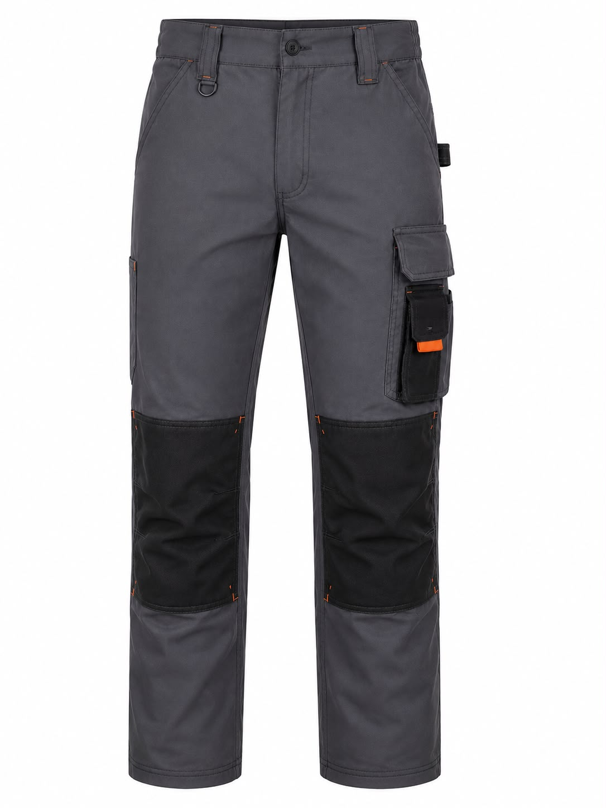
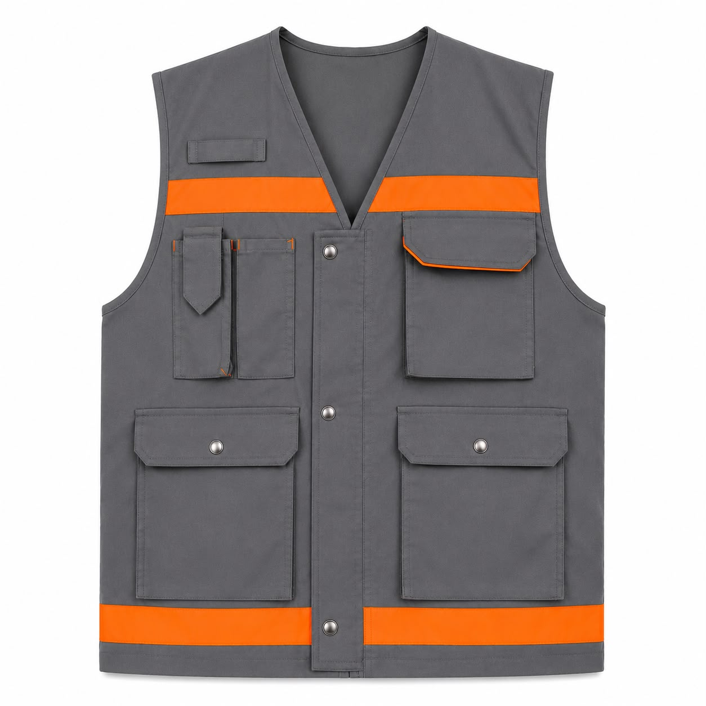
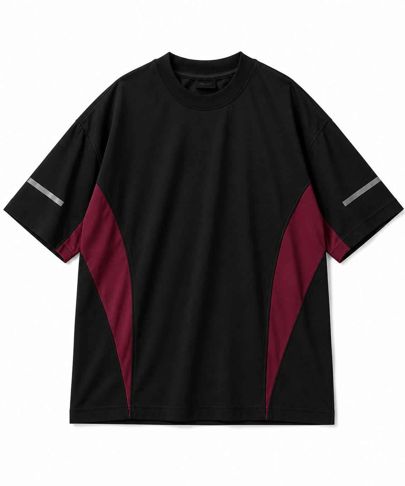
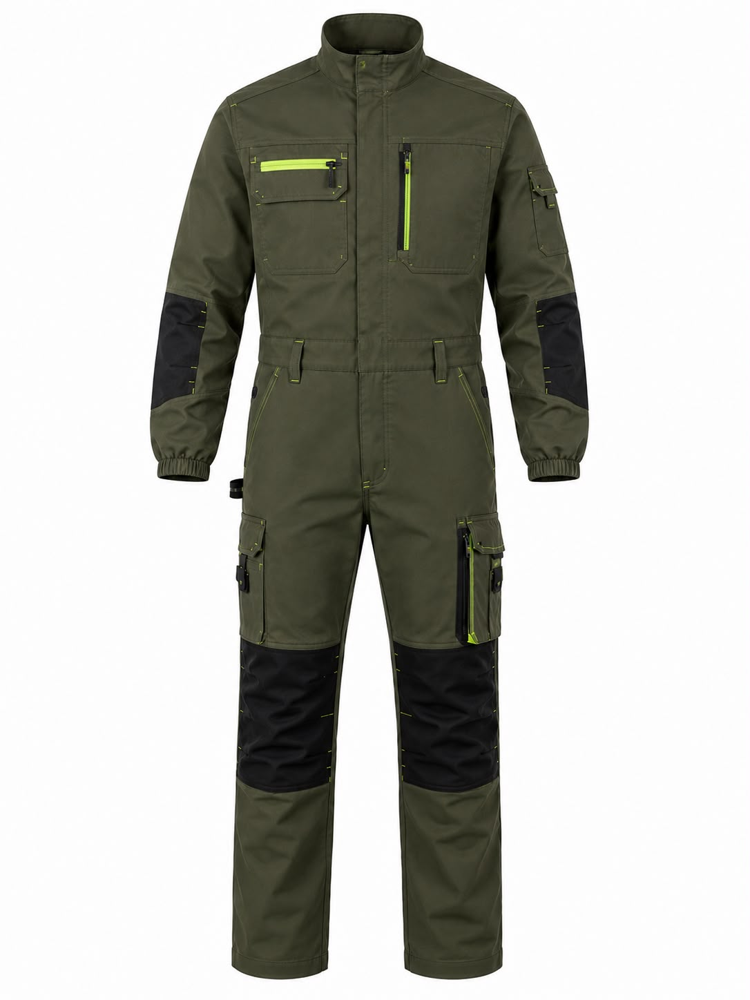
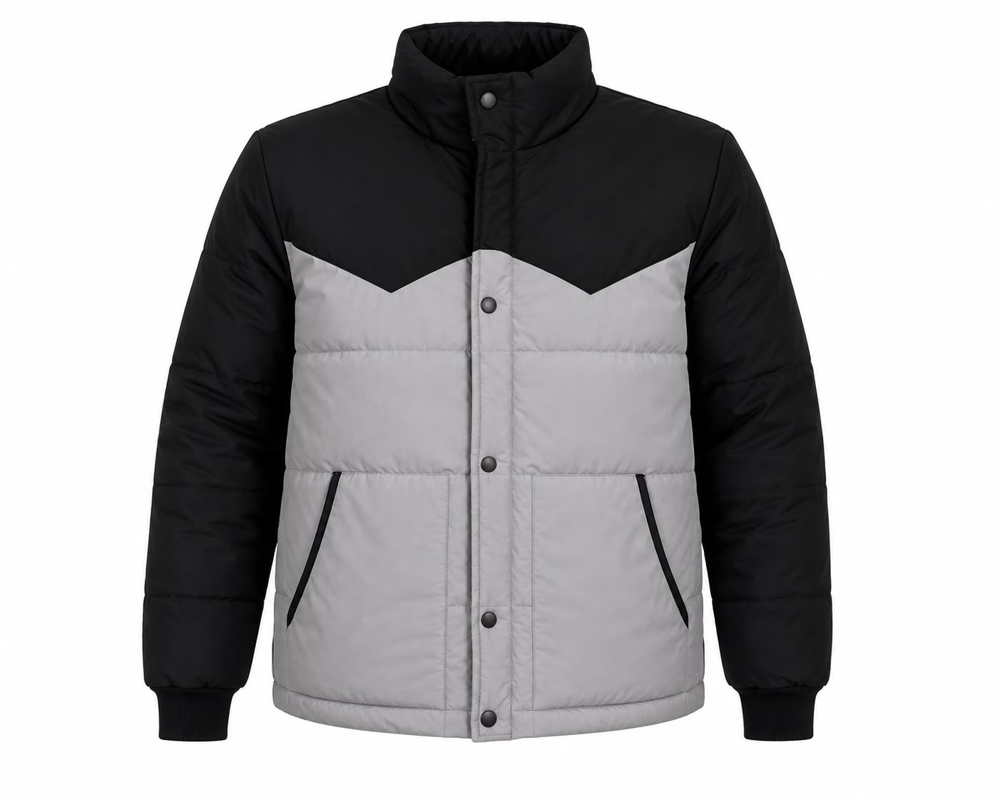
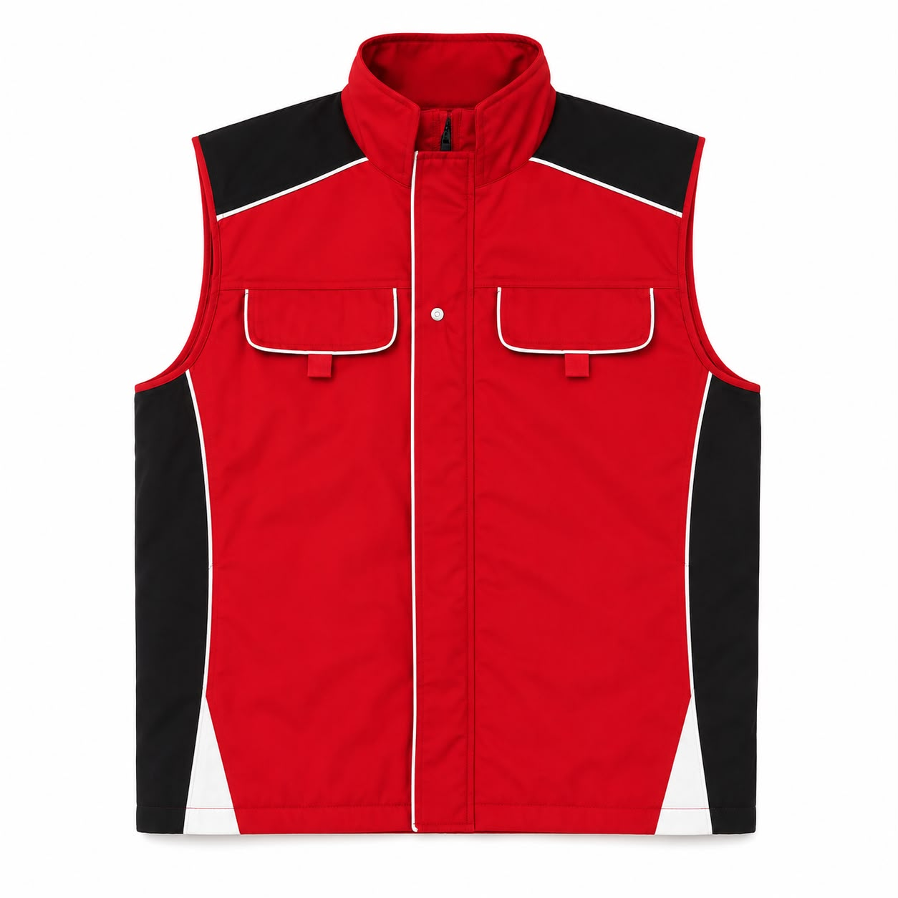

44 Yıllık Tecrübe
1982’den beri kurumsal iş kıyafeti üretimi.
Tişört, pantolon, tulum, mont, yelek, polar ve önlük üretimi. Model, renk, baskı ve nakış uygulamaları firmanıza özel hazırlanır. Minimum sipariş 50 adet.





1982’den beri kurumsal iş kıyafeti üretimi.
Model, renk, cep, reflektör ve logo detayları size özel.
Üretim ve logo uygulaması tek süreçte yönetilir.
Kurumsal siparişlerinizi Türkiye genelinde teslim ediyoruz.
Kurumsal kullanım için öne çıkan ürün gruplarını inceleyin. Her model firma renklerinize, logonuza ve kullanım alanınıza göre üretilebilir.

Özel Üretim Logo Uygulaması
Logo Uygulaması
Minimum 50 Adet Özel Üretim
Özel Üretim Logo Uygulaması
Logo Uygulaması
Minimum 50 Adet
Özel ÜretimPendik / İstanbul’daki üretim tesisimizde kurumsal firmalara özel iş kıyafeti üretiyoruz. Ürün modeli, kumaş, renk ve logo uygulaması ihtiyaçlarını tek elden planlıyoruz.
HakkımızdaOtomotivden gıdaya, kimyadan ambalaja farklı sektörlerde yüzlerce kurumsal firmaya iş kıyafeti ürettik.
Elinizde örnek ürün, teknik çizim veya fotoğraf varsa WhatsApp’tan bizimle paylaşın. Model, kumaş, renk ve logo uygulamasını birlikte planlayalım.
Üretim tesisimizi ziyaret etmek veya siparişiniz hakkında görüşmek için bizimle iletişime geçebilirsiniz. Ziyaret öncesi randevu almanızı rica ederiz.